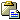
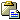

Особенности:
- Нажатие клавиш [ Ctrl + Down ] в полях ввода фамилии, фамилии в браке, имени и отчества - приводит к "унификации" соответствующей строки, первые буквы слов становятся заглавными, остальные - строчными.
- Внимание: использование символа "/" в основных полях имени (фамилии, имя, отчество) - запрещено, это может приводить к ошибкам в базе данных.
- Если диалог редактирования персоны был открыт при добавлении нового ребенка какому-то родителю, то выпадающий список отчеств будет содержать список вариантов отчества согласно имени отца.
-
Редактирование родителей персоны сделано в виде особой выделенной панели с двумя полями, где выводятся отец и мать редактируемого человека, а также тремя группами кнопок.
Так сделано для максимальной гибкости редактирования. Группа кнопок
 ,
,
 и
и  справа от полей имен родителей предназначена для управления
ссылкой на семью родителей в целом. Т.е. если семья родителей, к которой нужно присоединить данного человека уже существует - её можно присоединить кнопкой
. Если нужно отредактировать какие-то данные уже присоединенной семьи - это можно сделать кнопкой ,
т.е. отредактировать семью, не закрывая текущий диалог персоны. Кнопкой там-же, справа от имен родителей - человек отсоединяется от
семьи родителей.
справа от полей имен родителей предназначена для управления
ссылкой на семью родителей в целом. Т.е. если семья родителей, к которой нужно присоединить данного человека уже существует - её можно присоединить кнопкой
. Если нужно отредактировать какие-то данные уже присоединенной семьи - это можно сделать кнопкой ,
т.е. отредактировать семью, не закрывая текущий диалог персоны. Кнопкой там-же, справа от имен родителей - человек отсоединяется от
семьи родителей.
-
Такие-же кнопки , и
 под именем
каждого из родителей отвечают за другое: кнопка - добавляет новую семью, если никакая не была подключена ранее, и добавляет в неё
конкретного родителя (отца или мать, в зависимости от выбранной секции), кнопка соответственно отсоединяет из присоединенной к человеку семьи выбранного родителя (отца/мать).
Также возможны быстрые переходы на записи родителей по кнопкам .
под именем
каждого из родителей отвечают за другое: кнопка - добавляет новую семью, если никакая не была подключена ранее, и добавляет в неё
конкретного родителя (отца или мать, в зависимости от выбранной секции), кнопка соответственно отсоединяет из присоединенной к человеку семьи выбранного родителя (отца/мать).
Также возможны быстрые переходы на записи родителей по кнопкам .
,
и . Вызов операций добавления и
изменения супруга приводит к открытию окна редактирования семьи, где и делаются все требуемые действия - присоединение
супруга, добавление событий и детей. С помощью кнопок со стрелками можно менять порядок браков для данного человека.
- Внимание: важно понимать следующие моменты. Все взаимосвязи в генеалогической базе данных - это ссылки от одних записей к другим. Семья - это такая-же запись (или объект) со своими свойствами, фактами и ссылками, как и персональная запись. Запись семьи - это специализированная запись для объединения двух родителей, детей и фактов о семье в одно целое.
-
Поэтому закладка "Семьи" диалога редактирования персональных записей - это список не просто супругов данной персоны, это - список ссылок на соответствующие записи семей,
в которых состоит/состоял данный человек. Именно поэтому, при переходе кнопкой на закладке "Семьи" - открывается диалог редактирования соответствующей
записи семьи.
- Поэтому когда вы делаете удаление пункта в этом списке - вы фактически отсоединяете текущую персону от указанной семьи. Должна остаться запись семьи с детьми и одним неизвестным супругом, которым являлась текущая персона.
У любой персоны может быть несколько "полных имен" - т.е. каждое такое имя может включать части фамилии, имени, отчества, прозвища и др.
Это сделано для тех случаев, если в течении жизни человека, все или некоторые части менялись. Например, если при усыновлении/удочерении, человек поменял все части: фамилию, имя, отчество. Также бывают случаи (реальный пример), когда родился ребенок Широков Зеновей Ефремович, потом умерли родители, был усыновлен восприемниками и несколько лет назывался Пугов Зеновей Ефремович, а затем изменилось и отчество по имени усыновителя, человек стал Пуговым Зеновеем Ивановичем.
В подобных случаях бывает удобно сделать в записи персоны три записи полных имен, где будет полное указание всех частей и пометка типа имени.
В других случаях у человека могут быть несколько сильно различающихся имен на различных языках - когда отличается не просто транслитерация имен, но фамилия и имя имеют совершенно отличное написание и произношение.
Внимание: поля ввода частей имени, расположенные в верхней части диалога редактирования персон - всегда изменяют части того имени, которое указано в списке имён первым. Любое полное имя можно сделать первым, тогда оно будет основным для отображения везде.
,
и . Для любого человека можно задать любое количество событий, которые с
ним происходили, различных его атрибутов, заметок, фотографий и иных мультимедиа записей, источников в которых он упоминается,
браков и групп.
 "Копировать" и  "Вставить".
Эти функции очень полезны при массовом вводе больших объемов информации.
Подробное описание этих функций в разделе
"Копировать" и  "Вставить".
Эти функции очень полезны при массовом вводе больших объемов информации.
Подробное описание этих функций в разделе